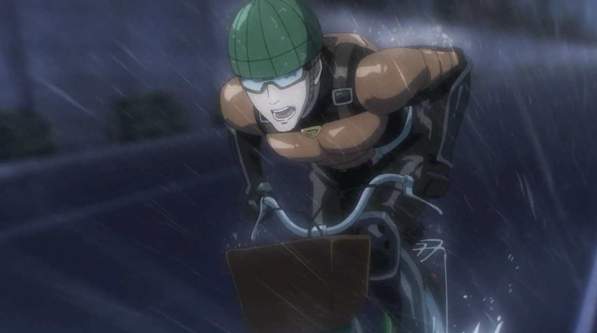

- “I’ll leave tomorrow’s problems to tomorrow’s me.”
-
“The true power of us human beings is that we can change ourselves on
our own.”
-
“The world is full of justice. But there is no true justice.”
-
“The difference in skill is what makes the world go round.”
-
"There are no heroes or villains. Just people who make decisions."
-
"To become strong, you must first accept your own weaknesses"
-
“I don’t want to regret not having done something when I had the
chance.”
— Saitama

— Genos
— Garou
— Silver Fang
— Fubuki
— Bang
— Mumen Rider
